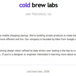
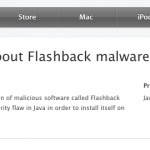

-
IPO这件事是否毁了Google?
Google搜索引擎一直以其准确的搜索结果著称，赢得用户的喜爱是自然而然的。据统计，微软的Bing搜索拥有15%的市场份额，而Google是多少？66%！说Google统治了互联网搜索也不为过。 近年来Google的业务领域逐渐扩展到各种不同领域，公司的主要业务变成了对抗Facebook。Google不再是以前那个Google，为什么？
-
10亿美元！Facebook正式...
Instagram是一家提供照片分享应用服务的公司，昨天Facebook宣布将以10亿美元现金加股票的方式收购这家公司。成立不到2年时间，拥有13名员工，此前没有任何盈利，Instagram再次上演了创业公司们喜闻乐见的互联网神话。 Instagram是一个照片分享类手机应用，于2010年10月正式推出，现有iOS和Android版本。使用...
-
哪些朋友邀请时，你会加入社交网络...
以往有研究表明，如果某人身边的许多人做了同一件事，比如买了某个商品、参加某项活动或是操练某项爱好，那么他也会倾向于去做这件事。近日，美国康奈尔大学的计算机科学家乔恩·克莱因伯格（Jon Kleinberg）及其同事在研究人们是否加入网络社交媒体时，发现影响决定的因素并不是朋友数量，而...
-
甜蜜蜜：帮你寻找附近的同好单身青...
去年底我们在上海做了第一期线下创业者活动，其中“喜剧公司”这个项目吸引了我们的注意力，并不只因他们是ChinaStars创业比赛冠军团队，或因为其创始人Niky在产品介绍过程中始终戴着厚重的公仔外套，更多是他们拥有“让大家一起来创造快乐”的美好信念。 现在他们启动了一个新项目 – “甜...
-
六秒决定你简历的生死
虽然我们可能永远也不知道为什么我们没有获得面试的机会，最近的一项对于招聘人员决策行为的研究中。据TheLadders研究，招聘人员在最初的六秒钟里，就会对招聘结果做出判断。 研究中使用了被称为“眼跟踪”的技术，在10个星期的时间内对30名专业招聘人员的眼球轨迹进行记录，并以此分析消化一...
移动互联网广告有待继续开发
作者：孙大飞,发布于2012年04月13日下午5:25
世界各地的手机用户有5.3亿（53亿），这意味着77％的世界人口都在使用手机。其中的38亿或73％的用户大多数居住在新兴经济体内。然而，世界各地花费在移动广告上面的资金依然不能与传统的平台或互联网广告相抗衡。 目前世界的主流广告平台，依然集中在传统的平面广告和互联网广告中，面对移动...
雨滴阅读，首款面向国人的稍后读应用
作者：pacinoson,发布于2012年04月13日下午4:30
快节奏的生活使我们很难精心下来阅读网上的长文。然而在工作之外，我们却有很多碎片化的时间可以利用。这也是Instapaper、Read It Later、Readability和Kilp.me等一些“稍后读”应用应运而生的原因。这些工具可以保存电脑上的网页，抽取主体内容，最后同步到移动终端方便用户随时随地的阅读。而现在国...
Cold Brew Labs，Pinterest的进化之路
作者：pacinoson,发布于2012年04月13日下午3:20
Cold Brew Labs（以下称CBL）由Pinterest创始人Ben Silbermann和Paul Sciarra于2008年创立。从下列的CBL官网截图中，我们可以清晰看到Pinterest这个全球第三大的社交网络在成功前的涅磐之路。 CBL初期主要在开发一款名为Tote的移动购物应用。2009年初（融资前）他们已经准备推出这个产品。 而在2010年2月，Tote这个iPhon...
Apple 正在开发侦测、移除恶意软件「Flashback」...
作者：qiuyan,发布于2012年04月13日下午2:10
 Apple 在官方支持网页发布了一则消息，说明该公司已透过更新修复了 Mac OS X 10.6 与 OS X 10.7 上 Java 的安全漏洞。同时 Apple 正在开发能够侦测、移除恶意软件「Flashback」的工具。 前一阵子俄罗斯的反病毒公司 Dr. Web 指出此一恶意软件已造成全球数十万台 Mac 受害，该恶意软件会在使用者浏览一些网站时透...
Wavii将给用户阅读带来全新体验 像Facebook一样阅...
作者：孙大飞,发布于2012年04月13日下午1:05
你是否已经厌倦了每天面对大量信息，毫无头绪的阅读耗费时间精力。你是否已经厌倦每次点击不同文章时，却发现文章内容几乎一样而失望透顶。以后不会了，Wavii将替你处理这一切。 Wavii使用自然语言处理、排序，然后通过文章、音频、视频和其他的方式将内容呈现在用户眼前，并且着重突出的事...
HT实验室： 跟着美食找餐厅 不再烦恼吃什么
作者：qiuyan,发布于2012年04月13日下午12:00
【HT观点】外出觅食，最头疼的一件事就是吃什么？公司周边的餐馆早就吃腻了，即使去了也不知道吃什么，吃饭成为头等难解决的大事。但是童鞋们，想一想每日必去的餐厅你是否尝尽所有的菜色？当然不是，很多人同一地点，总是习惯老三样的菜色，所以总觉得食不知味，因为我们总是习惯于去到...
飞车来了，赶快拿起电话订购吧！
作者：kkzxak47,发布于2012年04月13日上午10:50
可以飞的汽车一直是人们未来幻想里的常客：高楼大厦耸立，分成各种层次的悬浮车流纵横交错。现在，这些已经不再是梦想，近期的纽约国际车展里出现了已经试验成功的“飞车”原型。 这架叫做Terrafugia的两座飞机有2个可折叠的机翼，4个轮子，转向灯齐备。马萨诸塞州的这家公司一直称之为“陆...
优微团队，为用户呈现属于自己的个性互联网。
作者：XJP,发布于2012年04月13日上午9:40
基于微博的内容工具已经有很多，不论是在线产品或是手机应用。主要分两类：第一类是推荐热门的内容给用户，纯粹主打内容传播；第二类是基于用户已有内容与数据，挖掘、筛选、推荐用户喜欢的内容。 优微是属于后者，他们在稍早的时候就联系到我，但提出等他们2.0推出的时候再报道。现在，...
想要$1000000？找资金前问自己7个问题先
作者：kkzxak47,发布于2012年04月13日上午8:30
Jason Baptiste是iPad网络广告和内容平台OnSwipe的创始人之一，他为自己的创业项目拿到了6百万美元资金。有些东西他也想在创办公司之前就懂，于是他写了一本书，帮助新的创业者们。 这本书叫《超轻量级创业》（The Ultralight Startup），对OnSwipe、Twitter、Foursquare和Dropbox等实例进行了研究，为创业者们提供...
奢侈马桶：遥控器用的是触摸屏！
作者：kkzxak47,发布于2012年04月12日下午5:25
说起马桶，不知道为什么我首先想到的是日本，可能是日本关于马桶的新闻比较多吧，有会唱歌的马桶，有能体检的马桶…各种古怪马桶见过以后，已经见怪不怪。但今天看到这款马桶，我还是有种给生产商“跪了”的冲动。 科勒（Kohler）是一家美国公司，主打产品是厨卫、室内装饰、发电系统等。...
苹果等涉嫌垄断电子书价格 遭美司法部指控
作者：qiuyan,发布于2012年04月12日下午4:30
美国司法部指控苹果等公司涉嫌电子书价格垄断 北京时间4月12日消息，在美国纽约州地方法院，美国司法部对苹果、Hachette SA、HarperCollins、 Macmillan、 Penguin and Simon & Schuster等公司提起诉讼，指控上述公司和出版社相互串通垄断电子书价格。 在被指控后，已经有三家出版社同意和解，但苹果和Macmillan...
GoGrid 大数据运算的强大平台
作者：孙大飞,发布于2012年04月12日下午3:20
GoGrid今天介绍了他们旗下的专为大数据运算提供解决方案的预测分析平台。与传统的云服务商不同，GoGrid的服务不仅限于云存储，更将这一领域扩展到对大数据的云计算。用户通过使用GoGrid的服务，可以直接获得所需数据的结果，而避免了自行计算的过程。 这一平台增加了与云计算相结合的具有混合...
Google+再次改版，向更简单漂亮的全新Google继续迈...
作者：pacinoson,发布于2012年04月12日下午2:10
Google+刚刚经历了大幅改版。新版的Google+有着全新的导航栏、更好的图片体验和更开放的视频聊天功能。 Google已经孤注一掷进军社交领域，比如Google+开始整合YouTube和Docs这些服务。最近Larry Page宣布，Google+有超过10亿活跃用户，这也证明Google的策略开始奏效。当然Page口中的“活跃”用户也许并不是真正...
超级图灵机：人工智能技术的革命性进展
作者：kkzxak47,发布于2012年04月12日下午1:05
2012年是“人工智能之父”英国数学家阿兰·图灵（Alan Turing）诞辰100周年。这位20世纪最伟大的智者之一在其短暂的一生中为我们留下无比宝贵的智慧遗产，为了纪念他，被视为计算机科学领域最高奖的“A.M.图灵奖”以他的名字命名。阿兰·图灵最为突出的贡献是“图灵机”和“图灵试验”两个思想，...
传统杂志业的逆袭 自建网上商店
作者：孙大飞,发布于2012年04月12日下午12:00
网上零售商已成为传统杂志日益严重的威胁，在过去的几年生活杂志发行中，他们也通过不断聘请有影响力的编辑等等方式极力进行改进，可惜收效甚微。 现在杂志进行了反击，他们开始建立自己的网上商店。 Time Out New York，一本涵盖电影，戏剧，时装，食品和周边实事的杂志，在纽约宣布将开始销...
关注我们
查看更多专栏作者
企业寻人查看更多
- 爱乐活无线急招产品、开发、策划众多职
- 上海 举栗网络招聘前后端工程师
- 广州 每日圈招聘技术合伙人、前端、开
- 南京 约饭网招募PHP开发工程师
- 北京 飞讯招聘PHP开发工程师
- 北京 音乐创业公司招JS前端工程师
- 上海 简意网络急招前后端工程师、UI
- 上海 电商项目寻Lead Devel
- 北京 MEPP招Flash及网站工程
- 北京 拍客网招聘PHP/.NET开发
热门文章
- 假如有这么个应用——帮助餐馆将订不出去的部分餐位订出去 (33)
- 假如有这么个应用——基于LBS的记账应用 (28)
- 知乎，知乎？ (27)
- Tech2IPO微博互动送书活动！ (27)
- 假如有这么个应用——开篇 (21)
- HT实验室：携程VS去哪儿，机票酒店哪家订？ (21)
- 假如有这么个应用——“哪有”本地消费问答平台 (19)
- 公司诊断之二：淘宝网SNS化很难成功 (17)
- 微博时代，王者之争：“新浪微博”与“腾讯微博”评测报告 (17)
- “酷我”的缺憾――“酷我听听”iOS平台评测 (16)
- 中国团购之路 (15)
- 分类信息网站58同城与赶集网评测：“神奇的 啥都有” (15)
- 模仿与超越：轻博客Tumblr VS 点点 (15)
- 几大热门网站比较：哪个网站用户忠诚度最高？ (14)
- 假如有这么个应用——售卖这个世界的声音 (14)